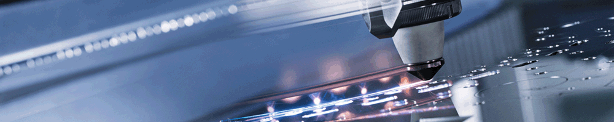

S-au lansat sectiunile "Aplicatii" si "Steel Design" ale site-ului
La scurt timp dupa lansarea oficiala a site-ului ne-am gandit si am pus repede in practica alte sectiuni pe care le aveam in vedere pentru acest site. Dupa cum ne spune si titlul este vorba de sectiunea de Aplicatii unde se pot afla mai multe informatii despre lucruri practice sau domenii de aplicabilitate practica a ceea ce se prezinta aici. Domeniile de utilizare ale laserului sunt multe, dar aici ne vom concentra in principal asupra prelucrarii de tabla, debitarea cu laser a tablei si a materialelor de acest gen, proces numit de altii simplu: taiere tabla sau decupare tabla. In curand vom incerca sa adaugam si o galerie de imagini din "practica", si speram sa va oferim o vedere de ansamblu asupra lucrurilor posibile, sau mai degraba facute posibile, de acest procedeu al taierii cu laser.
O cea de a doua sectiune pe care o lansam azi, este cea numita Steel design, unde veti putea putea afla informatii despre o latura mai recent dezvoltata, si oarecum avangardista a debitarii cu laser, cea descrisa mai mult de hobby-isti, numite Steel Design. Va spunem doar atat: este vorba de lucruri designer-made, obiecte unicat, sau la comanda, care pot fi obtinute prin taierea cu laser: daca va uitati bine prin casa s-ar putea sa observati ca intamplator aveti un posesie un asemenea obiect. El poate fi un breloc, un cuier sau alte lucruri de uz casnic carora nu le-am dat prea mare importanta. Mai multe va lasam sa descoperiti pe pagina dedicata.
Va invitam sa le vizionati: Aplicatii sau Steel design
Prima versiune a site-ului este functionala!

Va salutam cu respect pe toti cei care vizitati acest site. Versiunea vizibila voua este prima in acest moment, si speram sa fie una imbunatatia constant, atat din punct de vedere al continului cat si al calitatii materialelor postate. Acest site isi propune sa ofere informatii introductive despre acest concept al debitarii cu laser in tabla, numit de unii taiare cu laser, sau mai simplu decupare tabla. In diferitele sectiuni ale site-ului veti descoperii informatii despre aceste procese, si speram sa fie de folos pentru cei care ne vizitati.
Noi, ne angajam sa pastra site-ul up-to-date referitor la informatiile din domeniul acesta, si sa raspundem la eventualele solicitari sau cereri din partea dvs. Mentionam ca este un proiect intretinut de un grup de persoane fara interese comerciale, in scop pur informativ pentru oricine doreste sa afle mai multe informatii, sau chiar primele informatii despre acest domeniu, al taierii cu laser. Pentru a ne contacta va rugam sa apelati la sectiunea Contact